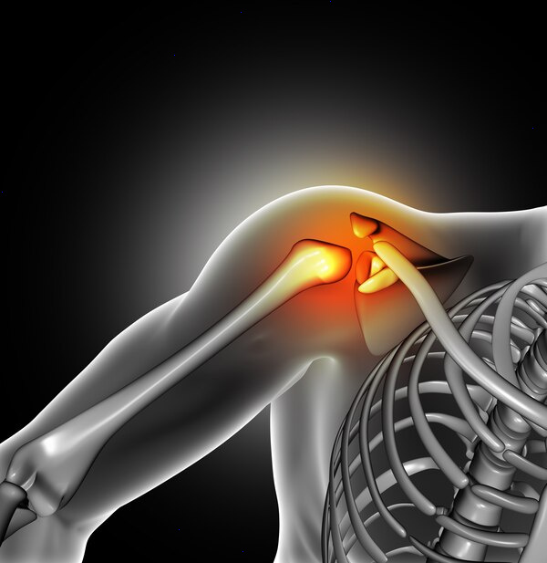

Salud y belleza
¿Cómo quitar el dolor de articulaciones rápido?
El dolor en las articulaciones es una molestia común que puede afectar nuestra calidad de vida. Afortunadamente, existen diversas formas de aliviar este dolor rápidamente y sin necesidad de acudir...
Salud y belleza
¿Qué ungüento es bueno para las articulaciones?
El dolor articular es una queja común entre personas de todas las edades. La molestia puede originarse por varias causas, desde lesiones deportivas y envejecimiento hasta condiciones crónicas como...
Salud y belleza
Duelen las articulaciones: soluciones naturales
El dolor en las articulaciones es una afección común que afecta a personas de todas las edades. Puede ser causado por una variedad de factores, como la artritis, lesiones, el desgaste natural debid...
Salud y belleza
Comprar ungüento para las articulaciones en España
Cuando se trata de cuidar nuestras articulaciones, es primordial encontrar productos efectivos y accesibles. En España, comprar ungüento para las articulaciones se ha vuelto una práctica común debi...
Salud y belleza
Remedios caseros para el dolor de articulaciones
El dolor de articulaciones es una molestia común que puede afectar a personas de todas las edades. Puede tener diversas causas, entre las cuales se incluyen la artritis, lesiones, postura incorrect...
Salud y belleza
Ungüentos efectivos para el alivio del dolor articular
El dolor articular es una dolencia común que afecta a un gran número de personas a nivel mundial, en especial a medida que envejecemos. Las causas pueden ser múltiples, incluyendo artritis, lesione...
Salud y belleza
Tratamientos rápidos para las articulaciones doloridas
Las articulaciones doloridas pueden afectar significativamente la calidad de vida, limitando el movimiento y causando molestias persistentes. Afortunadamente, existen varios tratamientos rápidos qu...
Salud y belleza
¿Duelen las articulaciones? Prueba estos métodos
Las molestias en las articulaciones son una queja común que puede afectar a personas de todas las edades. Aunque el envejecimiento es un factor clave, diferentes condiciones como la artritis, lesio...
Salud y belleza
Consejos para comprar ungüentos para las articulaciones
A la hora de comprar ungüentos para las articulaciones, es fundamental estar bien informado para tomar decisiones acertadas. Estos productos son ampliamente utilizados para aliviar dolores, inflama...
Salud y belleza
Alivio inmediato del dolor articular: ¿Qué ungüento elegir?
El dolor articular es un problema común que afecta a personas de todas las edades. Las causas pueden variar desde lesiones deportivas hasta condiciones crónicas como la artritis. Una de las solucio...

Salud y belleza
Cómo cuidar tus articulaciones de forma natural
Cuidar tus articulaciones es esencial para mantener una buena calidad de vida a lo largo de los años. Las articulaciones son las conexiones entre los huesos que permiten el movimiento y ofrecen sop...
Salud y belleza
Soluciones rápidas para el dolor de articulaciones
El dolor de articulaciones es una molestia común que puede afectar a personas de todas las edades. Ya sea debido a una lesión, artritis u otras afecciones, encontrar alivio puede ser crucial para m...
Salud y belleza
Guía para comprar el mejor ungüento para articulaciones
Adquirir el ungüento adecuado puede ser una tarea desafiante, especialmente cuando se busca aliviar el dolor articular. Con tantas opciones disponibles en el mercado, es crucial entender qué caract...

Salud y belleza
Tratamientos naturales para cuando duelen las articulaciones
El dolor en las articulaciones es una queja común entre personas de todas las edades. Ya sea debido a lesiones, artritis, desgaste natural o inflamación, el dolor articular puede interferir signifi...